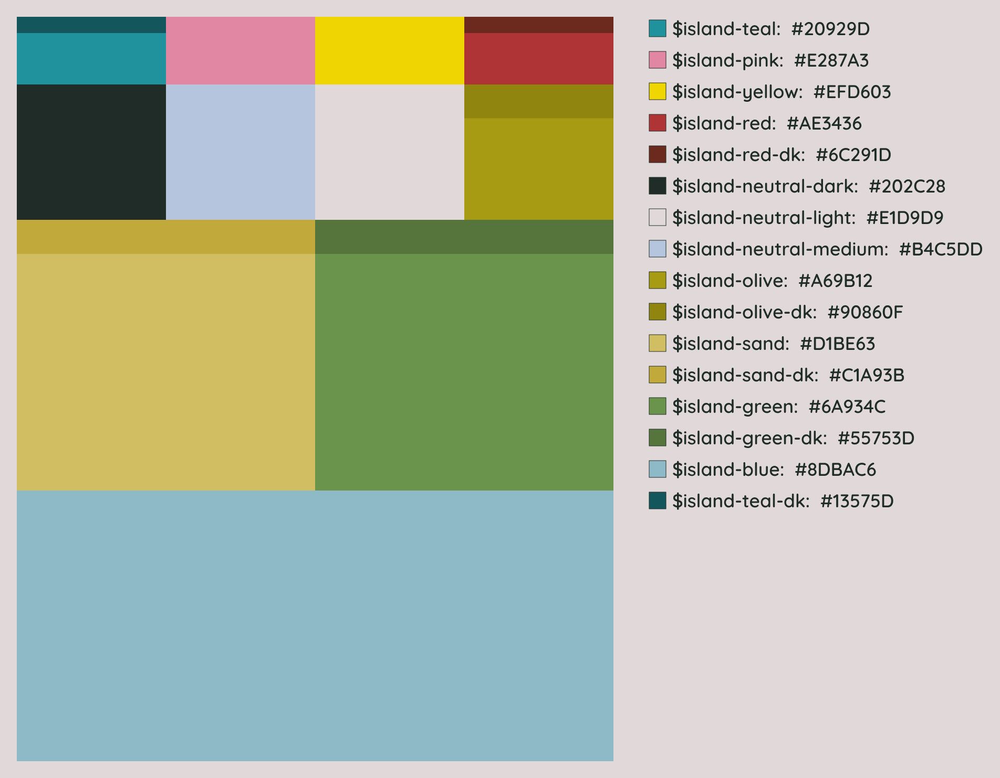
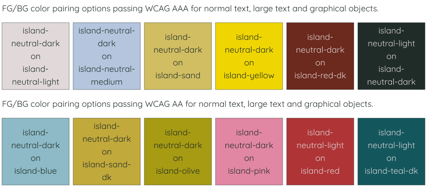
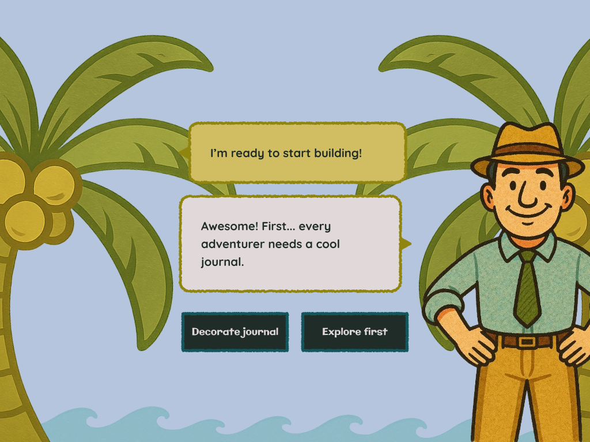
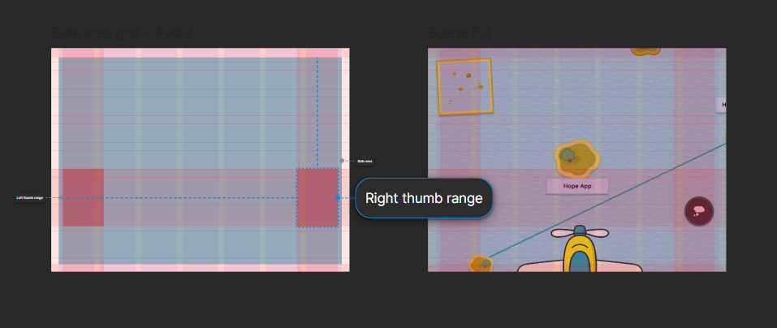

Background
KidsTeam is an intergenerational Cooperative Inquiry design team at the University of Maryland's Human-Computer Interaction Lab that partners with children to design youth technologies. KidsTeam kids are experts in being co-design partners.
As for any other designer, reflection is an important practice at KidsTeam. The children are given long-term journals to develop and record design ideas and to respond to reflection prompts on relevant design topics. However, this mode of reflection does not seem to resonate with the children’s personal interests and values.
This project is an accompaniment to an ongoing research project on co-designing reflective processes for use in KidsTeam.
Brainstorming
We conducted three co-design sessions at KidsTeam to better understand the children's values and mental models around reflective practices, and to come up with practices that we can use-test in KidsTeam the following year.
Session 1: Physical prototyping (design technique: Bags-of-Stuff)
Session 2: Roleplay presentations of prototypes from Session 1
Session 3: Mixing Ideas from previous sessions and storyboarding with Big Paper
The goal
To build part of a digital prototype based on a concept for a reflection tool developed in the co-design sessions.
The chosen idea is a gamified digital tool that uses the metaphor of islands for thoughts, where making reflective entries and connecting separate thoughts is rewarded.
- Each island is a topic or isolated thought.
- Reflecting makes the corresponding island grow.
- Reflecting on connections between ideas on different islands builds links between the islands.
Strategy
The children's vision for the Reflection Islands tool is to use it on Virtual Reality headsets. However, for practical reasons, we decided to prototype for the iPad Gen 2, which KidsTeam regularly use.
While my child design partners had specified the structure and flow of this tool, I made the choices for the visual and interaction design. My decisions were based on insights from the co-design sessions with KidsTeam, and from earlier research literature. This design is intended for the children in our specific cohort, who are between 8 and 13 years old.
Support coupling of physical journaling tools for child autonomy.
Leverage opportunities for customization as a means of self-expression.
Create playful approaches to generating and accessing content.
Children enjoy growing and collecting elements.
Based on the storyboard produced in the co-design session, I created a storyboard to lay out my prototype.
This project is a work in progress and I present here a prototype for the initial onboarding flow where the child learns the interface.
Design decisions
Since this interface is heavy in imagery, I started by picking the color palette. Most scenes are blue, green and sand-colored because of the nautical theme. To add brightness, I picked teal, pink, yellow and red accents that complemented the nautical palette well.
I analyzed the options for color pairings providing sufficient contrast by WCAG standards to inform my choice of colors for different elements.
All of the illustrations for the imagery are generated using GPT-4o. I asked for background scenery in the nautical color palette, and secondary imagery using some neutrals and accents as well. I asked for softer colored strokes for background elements, and dark strokes for elements that would be in the foreground. For UI elements, I chose a crayon-textured stroke for playfulness. For the highest contrast over busy colorful imagery, I chose dark neutrals for all buttons.
I provided hexadecimal codes for the desired colors and GPT-4o managed to approximate the hues, although not replicate the exact colors. I used an image editing software to correct the colors in each generated image.
Exaggerated and distracting buttons are common in game interfaces. However, it is important to note that Reflection Islands is not a video game. It is primarily a tool that we want to integrate into regular co-design sessions. Hence, my goal is to engage rather than distract or entertain.
Galindo is my playful display font for short stylistic text. I have paired it with Quicksand for body text.

I made touch targets larger for use by children. Apple's Human Interface Guidelines presribe a minimum area of 44 x 44 pt for touch targets; I am using a minimum of 52 x 52 pt. The layout is based on device guidelines for the safe area and normal thumb range when holding the iPad in both hands. This interface is designed to be used in landscape orientation.
At KidsTeam, the children enjoy decorating their journals. I added the same element of customization to this design by combining the accent colors with playful patterns to make a selection of journal covers.
I also want to add a selection of aircraft for children to choose from.
Journaling input is multimodal and flexible, supporting children's autonomy. In response to the goal of creating playful approaches to generating and accessing content, I created a set of free-form interactive buttons for the journaling toolbar. This aspect will be further developed when I prototype the interactions for visiting islands, adding connections and discovering random ideas.

Especially in the onboarding flow, it is critical for the interface to guide the child. I have used motion in interactions and transitions to nudge attention. Animations are bouncy for the playful feel.

In the sequence above, here's how motion guides the child -
- The character popping in at the top of the screen draws attention to the instructions.
- The button the character wants the child to press to go to their journal is in the right thumb range, away from where the child is currently looking. The button spins to draw their attention. It also helps that the character is facing and gesturing towards the button.
- During the transition, the button the child just pressed physically moves to the left thumb range. It is important for the child to register it as the button that will take them back to the airplane view and to also know where it is. Hence, it spins as it transitions from the "thought" button to the "airplane" button, signalling a change.
Prototype Video
Next Steps
Having finished the onboarding flow and main screens, the next step is to prototype -
- features for privacy and selective sharing of notes
- a fleshed-out reward system ("Doubloons" redeemable for rest breaks and snacks)
- scaffolded interactions with design partners
- background sound and auditory cues (waves, seagulls, airplane propeller, voiced instructions)
Since the children's original design was for a virtual reality headset, I plan to learn design for XR over the summer and create an adaptation of this prototype.
Learnings
This was my first time prototyping a game-adjacent digital interface. I realized how different game design must be from other utilitarian interfaces. Because of the focus on an onboarding flow, I also got to try my hand at visual storytelling. I realized how important motion is in directing attention and making an interface feel "real".
Given more time, I would have liked to apply Steven Swink's Mechanic-Dynamic-Aesthetic (MDA) framework to this design.